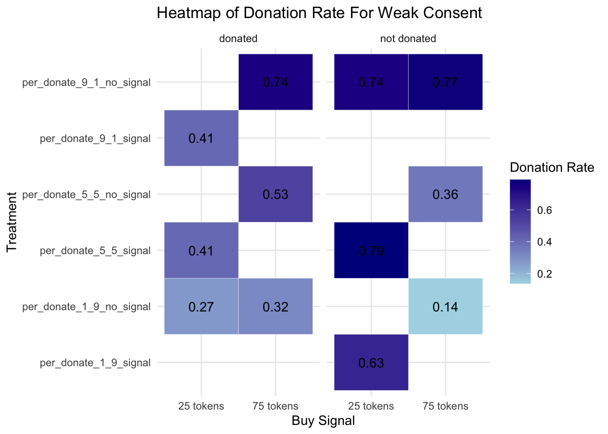
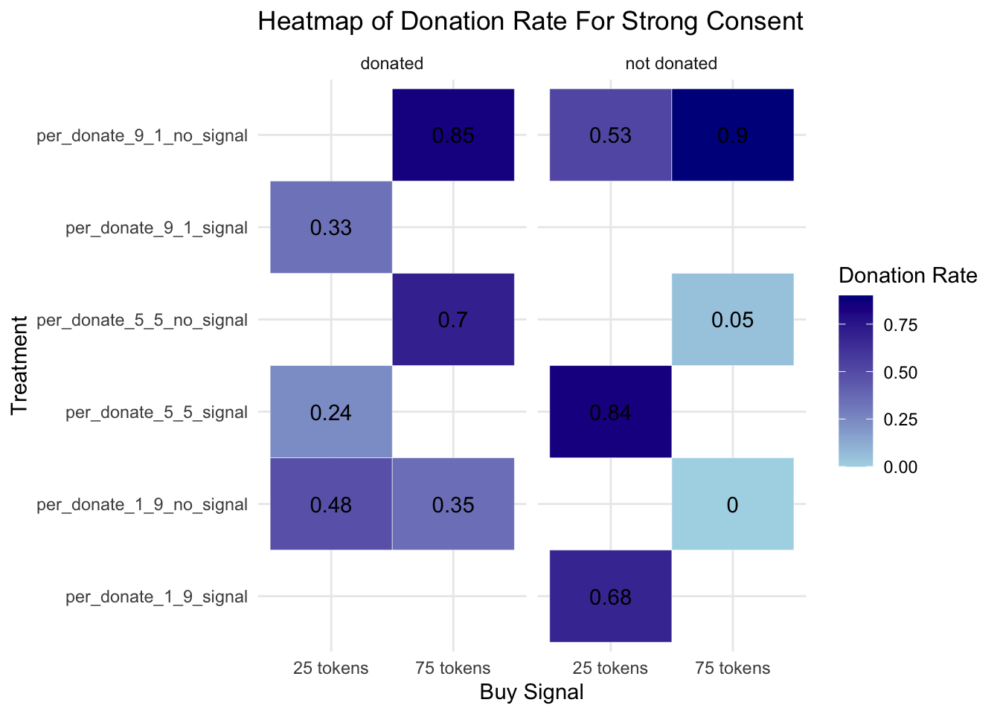

Code
library(dplyr)
library(tidyr)
library(readxl)
library(knitr)
library(ggplot2)
library(plotly)
library(Hmisc)
library(stringr)library(dplyr)
library(tidyr)
library(readxl)
library(knitr)
library(ggplot2)
library(plotly)
library(Hmisc)
library(stringr)# Import data
pilot_data <- read_excel("Opt_Experiment_Pilot3.xlsx")
# Keep the rows from 287 to 448
pilot_data <- pilot_data[287:448, ]
# payment_pilot3 <- pilot_data[-c(3:286), ]# Remove rows with name_wug contains 'Yetong'
pilot_data <- pilot_data %>%
# filter(!grepl("Yetong", name_wug)) %>%
# Remove rows with missing values for all p2_q1, p2_q2, p2_q3
#filter(!is.na(p2_q1) | !is.na(p2_q2) | !is.na(p2_q3)) %>%
# Remove the rows with Q57 == 2
filter((Q57 != '2.0') | (!is.na(Q57)))
# payment_pilot3 <- payment_pilot3 %>%
# filter(!grepl("Yetong", name_wug)) %>%
# # Remove rows with missing values for all p2_q1, p2_q2, p2_q3
# #filter(!is.na(p2_q1) | !is.na(p2_q2) | !is.na(p2_q3)) %>%
# # Remove the rows with Q57 == 2
# filter((Q57 != '2.0') | (!is.na(Q57)))
# Print the shape of the cleaned data, use a sentence
print(paste("The cleaned data has", nrow(pilot_data), "rows and", ncol(pilot_data), "columns."))[1] "The cleaned data has 162 rows and 139 columns."#write.xlsx(payment_pilot3, "payment_pilot3.xlsx")# Use a table to show the distribution of treatment arms
pilot_data %>%
group_by(DefaultStatus, BuySignal, OverturnCondition) %>%
summarise(count = n()) %>%
kable(caption = "Summary of treatment arms")| DefaultStatus | BuySignal | OverturnCondition | count |
|---|---|---|---|
| donated | 25 tokens | 1 token | 22 |
| donated | 25 tokens | 19 tokens | 21 |
| donated | 75 tokens | 1 token | 19 |
| donated | 75 tokens | 19 tokens | 20 |
| not donated | 25 tokens | 1 token | 19 |
| not donated | 25 tokens | 19 tokens | 19 |
| not donated | 75 tokens | 1 token | 22 |
| not donated | 75 tokens | 19 tokens | 20 |
We find that most participants, no matter which treatment arm they are in, are assigned to the Kandinsky family.
# pilot_data %>%
# filter(is.na(Assigned_Family))
# Use bar plot to show Assigned_Family across different treatment arms
family_summary <- pilot_data %>%
ggplot(aes(x = Assigned_Family, fill = Assigned_Family)) +
geom_bar() +
facet_grid(DefaultStatus ~ BuySignal + OverturnCondition) +
labs(title = "Assigned Family across different treatment arms", x = "Assigned Family", y = "Count") +
theme_minimal()
ggplotly(family_summary)Note:
# Group by DefaultStatus, BuySignal, OverturnCondition, WugRole and count occurrences of Yes and No for each question
summary_p2 <- pilot_data %>%
mutate(
WugRole = case_when(
str_detect(WugRole, "Wug donor") ~ "wug donor",
str_detect(WugRole, "Wug non-donor") ~ "wug non-donor",
TRUE ~ WugRole # Keeps original value if no match
)
) %>%
group_by(DefaultStatus, BuySignal, OverturnCondition, WugRole) %>%
summarise(
p2q1_1 = sum(p2_q1 == '1.0', na.rm = TRUE),
p2q1_2 = sum(p2_q1 == '2.0', na.rm = TRUE),
p2q2_1 = sum(p2_q2 == '1.0', na.rm = TRUE),
p2q2_2 = sum(p2_q2 == '2.0', na.rm = TRUE),
p2q3_1 = sum(p2_q3 == '1.0', na.rm = TRUE),
p2q3_2 = sum(p2_q3 == '2.0', na.rm = TRUE),
n_total = n()
) %>%
pivot_longer(cols = starts_with("p2q"),
names_to = c("Question", "Response"),
names_sep = "_",
values_to = "Count") %>%
mutate(
Proportion = Count / n_total,
ci = purrr::map2(Count, n_total, ~binom.test(.x, .y)$conf.int),
#ci = purrr::map2(Count, n_total, ~prop.test(.x, .y)$conf.int),
ci_lower = purrr::map_dbl(ci, 1),
ci_upper = purrr::map_dbl(ci, 2)
) %>%
select(-ci)
# Convert Response to factor for better plotting
summary_p2$Response <- factor(summary_p2$Response, levels = c("1", "2"), labels = c("Yes", "No"))# Plot using ggplot2
p2_plot_1 <- ggplot(summary_p2 %>%
filter(DefaultStatus=='donated'&
BuySignal=='25 tokens'&
OverturnCondition=='1 token'),
aes(x = Question, y = Proportion, fill = Response)) +
geom_bar(stat = "identity", position = "dodge") +
facet_wrap(~WugRole, scales = "free", ncol = 3) +
labs(
title = "Donated, 25 Tokens, 1 Token",
x = "Proportion of Yes and No Responses for Each Question in Part2",
y = "Proportion of Responses"
) +
geom_errorbar(aes(ymin = ci_lower, ymax = ci_upper),
position = position_dodge(0.9), width = 0.25) +
theme_minimal() +
scale_fill_manual(values = c("Yes" = "#00BFC4", "No" = "#F8766D")) +
theme(panel.spacing = unit(1.5, "lines"))
# Convert ggplot to plotly
ggplotly(p2_plot_1)# Plot using ggplot2
p2_plot_4 <- ggplot(summary_p2 %>%
filter(DefaultStatus=='donated'&
BuySignal=='25 tokens'&
OverturnCondition=='19 tokens'),
aes(x = Question, y = Proportion, fill = Response)) +
geom_bar(stat = "identity", position = "dodge") +
facet_wrap(~WugRole, scales = "free", ncol = 3) +
labs(
title = "Donated, 25 Tokens, 19 Tokens",
x = "Proportion of Yes and No Responses for Each Question in Part2",
y = "Proportion of Responses"
) +
geom_errorbar(aes(ymin = ci_lower, ymax = ci_upper),
position = position_dodge(0.9), width = 0.25) +
theme_minimal() +
scale_fill_manual(values = c("Yes" = "#00BFC4", "No" = "#F8766D")) +
theme(panel.spacing = unit(1.5, "lines"))
# Convert ggplot to plotly
ggplotly(p2_plot_4)# Plot using ggplot2
p2_plot_2 <- ggplot(summary_p2 %>%
filter(DefaultStatus=='donated'&
BuySignal=='75 tokens'&
OverturnCondition=='1 token'),
aes(x = Question, y = Proportion, fill = Response)) +
geom_bar(stat = "identity", position = "dodge") +
facet_wrap(~WugRole, scales = "free", ncol = 3) +
labs(
title = "Donated, 75 Tokens, 1 Token",
x = "Proportion of Yes and No Responses for Each Question in Part2",
y = "Proportion of Responses"
) +
geom_errorbar(aes(ymin = ci_lower, ymax = ci_upper),
position = position_dodge(0.9), width = 0.25) +
theme_minimal() +
scale_fill_manual(values = c("Yes" = "#00BFC4", "No" = "#F8766D")) +
theme(panel.spacing = unit(1.5, "lines"))
# Convert ggplot to plotly
ggplotly(p2_plot_2)# Plot using ggplot2
p2_plot_3 <- ggplot(summary_p2 %>%
filter(DefaultStatus=='donated'&
BuySignal=='75 tokens'&
OverturnCondition=='19 tokens'),
aes(x = Question, y = Proportion, fill = Response)) +
geom_bar(stat = "identity", position = "dodge") +
facet_wrap(~WugRole, scales = "free", ncol = 3) +
labs(
title = "Donated, 75 Tokens, 19 Tokens",
x = "Proportion of Yes and No Responses for Each Question in Part2",
y = "Proportion of Responses"
) +
geom_errorbar(aes(ymin = ci_lower, ymax = ci_upper),
position = position_dodge(0.9), width = 0.25) +
theme_minimal() +
scale_fill_manual(values = c("Yes" = "#00BFC4", "No" = "#F8766D")) +
theme(panel.spacing = unit(1.5, "lines"))
# Convert ggplot to plotly
ggplotly(p2_plot_3)# Plot using ggplot2
p2_plot_4 <- ggplot(summary_p2 %>%
filter(DefaultStatus=='not donated'&
BuySignal=='25 tokens'&
OverturnCondition=='1 token'),
aes(x = Question, y = Proportion, fill = Response)) +
geom_bar(stat = "identity", position = "dodge") +
facet_wrap(~WugRole, scales = "free", ncol = 3) +
labs(
title = "Not Donated, 25 Tokens, 1 Token",
x = "Proportion of Yes and No Responses for Each Question in Part2",
y = "Proportion of Responses"
) +
geom_errorbar(aes(ymin = ci_lower, ymax = ci_upper),
position = position_dodge(0.9), width = 0.25) +
theme_minimal() +
scale_fill_manual(values = c("Yes" = "#00BFC4", "No" = "#F8766D")) +
theme(panel.spacing = unit(1.5, "lines"))
# Convert ggplot to plotly
ggplotly(p2_plot_4)# Plot using ggplot2
p2_plot_5 <- ggplot(summary_p2 %>%
filter(DefaultStatus=='not donated'&
BuySignal=='25 tokens'&
OverturnCondition=='19 tokens'),
aes(x = Question, y = Proportion, fill = Response)) +
geom_bar(stat = "identity", position = "dodge") +
facet_wrap(~WugRole, scales = "free", ncol = 3) +
labs(
title = "Not Donated, 25 Tokens, 19 Tokens",
x = "Proportion of Yes and No Responses for Each Question in Part2",
y = "Proportion of Responses"
) +
geom_errorbar(aes(ymin = ci_lower, ymax = ci_upper),
position = position_dodge(0.9), width = 0.25) +
theme_minimal() +
scale_fill_manual(values = c("Yes" = "#00BFC4", "No" = "#F8766D")) +
theme(panel.spacing = unit(1.5, "lines"))
# Convert ggplot to plotly
ggplotly(p2_plot_5)# Plot using ggplot2
p2_plot_6 <- ggplot(summary_p2 %>%
filter(DefaultStatus=='not donated'&
BuySignal=='75 tokens'&
OverturnCondition=='1 token'),
aes(x = Question, y = Proportion, fill = Response)) +
geom_bar(stat = "identity", position = "dodge") +
facet_wrap(~WugRole, scales = "free", ncol = 3) +
labs(
title = "Not Donated, 75 Tokens, 1 Token",
x = "Proportion of Yes and No Responses for Each Question in Part2",
y = "Proportion of Responses"
) +
geom_errorbar(aes(ymin = ci_lower, ymax = ci_upper),
position = position_dodge(0.9), width = 0.25) +
theme_minimal() +
scale_fill_manual(values = c("Yes" = "#00BFC4", "No" = "#F8766D")) +
theme(panel.spacing = unit(1.5, "lines"))
# Convert ggplot to plotly
ggplotly(p2_plot_6)# Plot using ggplot2
p2_plot_7 <- ggplot(summary_p2 %>%
filter(DefaultStatus=='not donated'&
BuySignal=='75 tokens'&
OverturnCondition=='19 tokens'),
aes(x = Question, y = Proportion, fill = Response)) +
geom_bar(stat = "identity", position = "dodge") +
facet_wrap(~WugRole, scales = "free", ncol = 3) +
labs(
title = "Not Donated, 75 Tokens, 19 Tokens",
x = "Proportion of Yes and No Responses for Each Question in Part2",
y = "Proportion of Responses"
) +
geom_errorbar(aes(ymin = ci_lower, ymax = ci_upper),
position = position_dodge(0.9), width = 0.25) +
theme_minimal() +
scale_fill_manual(values = c("Yes" = "#00BFC4", "No" = "#F8766D")) +
theme(panel.spacing = unit(1.5, "lines"))
# Convert ggplot to plotly
ggplotly(p2_plot_7)In this section, Ill show the donation rates for each treatment arm.
# Create new variables to count the number of 'Donate' and 'Do not donate'
pilot_data <- pilot_data %>%
rowwise() %>%
mutate(
num_not_donate = sum(grepl("2.0", c_across(Screen_1_donated:Screen_6_notdonated), ignore.case = TRUE), na.rm = TRUE),
num_donate = sum(grepl("1.0", c_across(Screen_1_donated:Screen_6_notdonated), ignore.case = TRUE), na.rm = TRUE)
) %>%
ungroup()
# Group by DefaultStatus, BuySignal, OverturnCondition and show the donation rate for each treatment arms
summary_p3 <- pilot_data %>%
group_by(DefaultStatus, BuySignal, OverturnCondition) %>%
summarise(
num_donate = sum(num_donate),
num_not_donate = sum(num_not_donate),
# Calculate the donation rate
donation_rate = num_donate / (num_donate + num_not_donate),
# Calculate the confidence intervals for the donation rate
#ci = list(prop.test(num_donate, num_donate + num_not_donate)$conf.int),
#ci_lower = prop.test(num_donate, num_donate + num_not_donate)$conf.int[1],
#ci_upper = prop.test(num_donate, num_donate + num_not_donate)$conf.int[2]
# Calculate confidence intervals for the donation rate using binom.test()
ci = list(binom.test(num_donate, num_donate + num_not_donate)$conf.int),
ci_lower = ci[[1]][1], # Extract lower bound
ci_upper = ci[[1]][2] # Extract upper bound
) %>%
mutate(
donation_rate = round(donation_rate * 100, 2),
ci_lower = round(ci_lower * 100, 2),
ci_upper = round(ci_upper * 100, 2)
) %>%
ungroup() %>%
select(-ci)# Create new variables to count the number of 'Donate' and 'Do not donate'
screen_1 <- pilot_data %>%
rowwise() %>%
mutate(
num_not_donate_screen1 = sum(grepl("2.0", c_across(Screen_1_donated:Screen_1_notdonated), ignore.case = TRUE), na.rm = TRUE),
num_donate_screen1 = sum(grepl("1.0", c_across(Screen_1_donated:Screen_1_notdonated), ignore.case = TRUE), na.rm = TRUE)
) %>%
ungroup()
# Group by DefaultStatus, BuySignal, OverturnCondition and show the donation rate for each treatment arms
summary_screen1 <- screen_1 %>%
group_by(DefaultStatus, BuySignal, OverturnCondition) %>%
summarise(
num_donate_screen1 = sum(num_donate_screen1),
num_not_donate_screen1 = sum(num_not_donate_screen1),
# Calculate the donation rate
donation_rate_screen1 = num_donate_screen1 / (num_donate_screen1 + num_not_donate_screen1),
# Calculate the confidence intervals for the donation rate
# ci_screen1 = list(prop.test(num_donate_screen1, num_donate_screen1 + num_not_donate_screen1)$conf.int),
# ci_lower_screen1 = prop.test(num_donate_screen1, num_donate_screen1 + num_not_donate_screen1)$conf.int[1],
# ci_upper_screen1 = prop.test(num_donate_screen1, num_donate_screen1 + num_not_donate_screen1)$conf.int[2]
#
ci_screen1 = list(binom.test(num_donate_screen1, num_donate_screen1 + num_not_donate_screen1)$conf.int),
ci_lower_screen1 = ci_screen1[[1]][1], # Extract lower bound
ci_upper_screen1 = ci_screen1[[1]][2] # Extract upper bound
) %>%
mutate(
donation_rate_screen1 = round(donation_rate_screen1 * 100, 2),
ci_lower_screen1 = round(ci_lower_screen1 * 100, 2),
ci_upper_screen1 = round(ci_upper_screen1 * 100, 2)
) %>%
ungroup()
# Create a bar plot using ggplot2
donation_rate_screen1_plot <- ggplot(summary_screen1, aes(x = interaction(DefaultStatus, BuySignal, OverturnCondition), y = donation_rate_screen1, fill = interaction(DefaultStatus, BuySignal, OverturnCondition))) +
geom_bar(stat = "identity", position = "dodge") +
geom_errorbar(aes(ymin = ci_lower_screen1, ymax = ci_upper_screen1), width = 0.25, position = position_dodge(0.9)) +
labs(
title = "Donation Rates by Treatment Arms",
x = "Treatment Arms",
y = "Donation Rate (%)"
) +
theme_minimal() +
theme(legend.position = "none",
axis.text.x = element_text(angle = 45, hjust = 1))
# Pivot the data so that BuySignal becomes the x-axis and donation rates are shown on the heatmap
# summary_screen1 <- summary_screen1 %>%
# mutate(BuySignal = factor(BuySignal, levels = c("25 tokens", "75 tokens"))) %>%
# mutate(OverturnCondition = factor(OverturnCondition, levels = c("1 token", "19 tokens")))
#
# # Plot using ggplot2, creating a facet grid for DefaultStatus and OverturnCondition
# ggplot(summary_screen1, aes(x = BuySignal, y = donation_rate_screen1)) +
# geom_tile(aes(fill = donation_rate_screen1), color = "white") + # Create the heatmap tiles
# scale_fill_gradient(low = "lightblue", high = "darkblue") + # Gradient color scale
# facet_grid(OverturnCondition ~ DefaultStatus, labeller = label_both) + # Separate plots based on OverturnCondition and DefaultStatus
# geom_text(aes(label = round(donation_rate_screen1, 2)), color = "black", size = 6) + # Add labels on tiles
# labs(x = "Buy Signal", y = "Donation Rate (%)", fill = "Donation Rate",
# title = "Heatmap of Donation Rates by BuySignal and OverturnCondition") + # Add labels and title
# theme_minimal() + # Clean theme
# ylim(0, 100) + # Set y-axis limits
# theme(axis.text.x = element_text(angle = 45, hjust = 1), # Rotate x-axis labels for better readability
# axis.text = element_text(size = 8), # Adjust size of axis text for better readability
# strip.text = element_text(size = 8, face = "bold"), # Adjust facet labels size and style
# plot.title = element_text(hjust = 0.5, face = "bold"))
ggplotly(donation_rate_screen1_plot)# Create new variables to count the number of 'Donate' and 'Do not donate'
screen_2 <- pilot_data %>%
rowwise() %>%
mutate(
num_not_donate_screen2 = sum(grepl("2.0", c_across(Screen_2_donated:Screen_2_notdonated), ignore.case = TRUE), na.rm = TRUE),
num_donate_screen2 = sum(grepl("1.0", c_across(Screen_2_donated:Screen_2_notdonated), ignore.case = TRUE), na.rm = TRUE)
) %>%
ungroup()
# Group by DefaultStatus, BuySignal, OverturnCondition and show the donation rate for each treatment arms
summary_screen2 <- screen_2 %>%
group_by(DefaultStatus, BuySignal, OverturnCondition) %>%
summarise(
num_donate_screen2 = sum(num_donate_screen2),
num_not_donate_screen2 = sum(num_not_donate_screen2),
# Calculate the donation rate
donation_rate_screen2 = num_donate_screen2 / (num_donate_screen2 + num_not_donate_screen2),
# Calculate the confidence intervals for the donation rate
# ci_screen2 = list(prop.test(num_donate_screen2, num_donate_screen2 + num_not_donate_screen2)$conf.int),
# ci_lower_screen2 = prop.test(num_donate_screen2, num_donate_screen2 + num_not_donate_screen2)$conf.int[1],
# ci_upper_screen2 = prop.test(num_donate_screen2, num_donate_screen2 + num_not_donate_screen2)$conf.int[2]
ci_screen2 = list(binom.test(num_donate_screen2, num_donate_screen2 + num_not_donate_screen2)$conf.int),
ci_lower_screen2 = ci_screen2[[1]][1], # Extract lower bound
ci_upper_screen2 = ci_screen2[[1]][2] # Extract upper bound
) %>%
mutate(
donation_rate_screen2 = round(donation_rate_screen2 * 100, 2),
ci_lower_screen2 = round(ci_lower_screen2 * 100, 2),
ci_upper_screen2 = round(ci_upper_screen2 * 100, 2)
) %>%
ungroup()
# Create a bar plot using ggplot2
donation_rate_screen2_plot <- ggplot(summary_screen2, aes(x = interaction(DefaultStatus, BuySignal, OverturnCondition), y = donation_rate_screen2, fill = interaction(DefaultStatus, BuySignal, OverturnCondition))) +
geom_bar(stat = "identity", position = "dodge") +
geom_errorbar(aes(ymin = ci_lower_screen2, ymax = ci_upper_screen2), width = 0.25, position = position_dodge(0.9)) +
labs(
title = "Donation Rates by Treatment Arms",
x = "Treatment Arms",
y = "Donation Rate (%)"
) +
theme_minimal() +
theme(legend.position = "none",
axis.text.x = element_text(angle = 45, hjust = 1))
ggplotly(donation_rate_screen2_plot)# colnames(pilot_data)
# Create new variables to count the number of 'Donate' and 'Do not donate'
# Assuming the correct column names are 'Screen_3_donated' and 'Screen_3_notdonated'
screen_3 <- pilot_data %>%
rowwise() %>%
mutate(
num_not_donate_screen3 = sum(grepl("2.0", c_across(starts_with("Screen_3")), ignore.case = TRUE), na.rm = TRUE),
num_donate_screen3 = sum(grepl("1.0", c_across(starts_with("Screen_3")), ignore.case = TRUE), na.rm = TRUE)
) %>%
ungroup()
# Group by DefaultStatus, BuySignal, OverturnCondition and show the donation rate for each treatment arms
summary_screen3 <- screen_3 %>%
group_by(DefaultStatus, BuySignal, OverturnCondition) %>%
summarise(
num_donate_screen3 = sum(num_donate_screen3),
num_not_donate_screen3 = sum(num_not_donate_screen3),
# Calculate the donation rate
donation_rate_screen3 = num_donate_screen3 / (num_donate_screen3 + num_not_donate_screen3),
# Calculate the confidence intervals for the donation rate
# ci_screen3 = list(prop.test(num_donate_screen3, num_donate_screen3 + num_not_donate_screen3)$conf.int),
# ci_lower_screen3 = prop.test(num_donate_screen3, num_donate_screen3 + num_not_donate_screen3)$conf.int[1],
# ci_upper_screen3 = prop.test(num_donate_screen3, num_donate_screen3 + num_not_donate_screen3)$conf.int[2]
ci_screen3 = list(binom.test(num_donate_screen3, num_donate_screen3 + num_not_donate_screen3)$conf.int),
ci_lower_screen3 = ci_screen3[[1]][1], # Extract lower bound
ci_upper_screen3 = ci_screen3[[1]][2] # Extract upper bound
) %>%
mutate(
donation_rate_screen3 = round(donation_rate_screen3 * 100, 2),
ci_lower_screen3 = round(ci_lower_screen3 * 100, 2),
ci_upper_screen3 = round(ci_upper_screen3 * 100, 2)
) %>%
ungroup()
# Create a bar plot using ggplot2
donation_rate_screen3_plot <- ggplot(summary_screen3, aes(x = interaction(DefaultStatus, BuySignal, OverturnCondition), y = donation_rate_screen3, fill = interaction(DefaultStatus, BuySignal, OverturnCondition))) +
geom_bar(stat = "identity", position = "dodge") +
geom_errorbar(aes(ymin = ci_lower_screen3, ymax = ci_upper_screen3), width = 0.25, position = position_dodge(0.9)) +
labs(
title = "Donation Rates by Treatment Arms",
x = "Treatment Arms",
y = "Donation Rate (%)"
) +
theme_minimal() +
theme(legend.position = "none",
axis.text.x = element_text(angle = 45, hjust = 1))
ggplotly(donation_rate_screen3_plot)# Create new variables to count the number of 'Donate' and 'Do not donate'
screen_4 <- pilot_data %>%
rowwise() %>%
mutate(
num_not_donate_screen4 = sum(grepl("2.0", c_across(Screen_4_donated:Screen_4_notdonated), ignore.case = TRUE), na.rm = TRUE),
num_donate_screen4 = sum(grepl("1.0", c_across(Screen_4_donated:Screen_4_notdonated), ignore.case = TRUE), na.rm = TRUE)
) %>%
ungroup()
# Group by DefaultStatus, BuySignal, OverturnCondition and show the donation rate for each treatment arms
summary_screen4 <- screen_4 %>%
group_by(DefaultStatus, BuySignal, OverturnCondition) %>%
summarise(
num_donate_screen4 = sum(num_donate_screen4),
num_not_donate_screen4 = sum(num_not_donate_screen4),
# Calculate the donation rate
donation_rate_screen4 = num_donate_screen4 / (num_donate_screen4 + num_not_donate_screen4),
# Calculate the confidence intervals for the donation rate
# ci_screen4 = list(prop.test(num_donate_screen4, num_donate_screen4 + num_not_donate_screen4)$conf.int),
# ci_lower_screen4 = prop.test(num_donate_screen4, num_donate_screen4 + num_not_donate_screen4)$conf.int[1],
# ci_upper_screen4 = prop.test(num_donate_screen4, num_donate_screen4 + num_not_donate_screen4)$conf.int[2]
ci_screen4 = list(binom.test(num_donate_screen4, num_donate_screen4 + num_not_donate_screen4)$conf.int),
ci_lower_screen4 = ci_screen4[[1]][1], # Extract lower bound
ci_upper_screen4 = ci_screen4[[1]][2] # Extract upper bound
) %>%
mutate(
donation_rate_screen4 = round(donation_rate_screen4 * 100, 2),
ci_lower_screen4 = round(ci_lower_screen4 * 100, 2),
ci_upper_screen4 = round(ci_upper_screen4 * 100, 2)
) %>%
ungroup()
# Create a bar plot using ggplot2
donation_rate_screen4_plot <- ggplot(summary_screen4, aes(x = interaction(DefaultStatus, BuySignal, OverturnCondition), y = donation_rate_screen4, fill = interaction(DefaultStatus, BuySignal, OverturnCondition))) +
geom_bar(stat = "identity", position = "dodge") +
geom_errorbar(aes(ymin = ci_lower_screen4, ymax = ci_upper_screen4), width = 0.25, position = position_dodge(0.9)) +
labs(
title = "Donation Rates by Treatment Arms",
x = "Treatment Arms",
y = "Donation Rate (%)"
) +
theme_minimal() +
theme(legend.position = "none",
axis.text.x = element_text(angle = 45, hjust = 1))
ggplotly(donation_rate_screen4_plot)# Create new variables to count the number of 'Donate' and 'Do not donate'
screen_5 <- pilot_data %>%
rowwise() %>%
mutate(
num_not_donate_screen5 = sum(grepl("2.0", c_across(Screen_5_donated:Screen_5_notdonated), ignore.case = TRUE), na.rm = TRUE),
num_donate_screen5 = sum(grepl("1.0", c_across(Screen_5_donated:Screen_5_notdonated), ignore.case = TRUE), na.rm = TRUE)
) %>%
ungroup()
# Group by DefaultStatus, BuySignal, OverturnCondition and show the donation rate for each treatment arms
summary_screen5 <- screen_5 %>%
group_by(DefaultStatus, BuySignal, OverturnCondition) %>%
summarise(
num_donate_screen5 = sum(num_donate_screen5),
num_not_donate_screen5 = sum(num_not_donate_screen5),
# Calculate the donation rate
donation_rate_screen5 = num_donate_screen5 / (num_donate_screen5 + num_not_donate_screen5),
# Calculate the confidence intervals for the donation rate
# ci_screen5 = list(prop.test(num_donate_screen5, num_donate_screen5 + num_not_donate_screen5)$conf.int),
# ci_lower_screen5 = prop.test(num_donate_screen5, num_donate_screen5 + num_not_donate_screen5)$conf.int[1],
# ci_upper_screen5 = prop.test(num_donate_screen5, num_donate_screen5 + num_not_donate_screen5)$conf.int[2]
ci_screen5 = list(binom.test(num_donate_screen5, num_donate_screen5 + num_not_donate_screen5)$conf.int),
ci_lower_screen5 = ci_screen5[[1]][1], # Extract lower bound
ci_upper_screen5 = ci_screen5[[1]][2] # Extract upper bound
) %>%
mutate(
donation_rate_screen5 = round(donation_rate_screen5 * 100, 2),
ci_lower_screen5 = round(ci_lower_screen5 * 100, 2),
ci_upper_screen5 = round(ci_upper_screen5 * 100, 2)
) %>%
ungroup()
# Create a bar plot using ggplot2
donation_rate_screen5_plot <- ggplot(summary_screen5, aes(x = interaction(DefaultStatus, BuySignal, OverturnCondition), y = donation_rate_screen5, fill = interaction(DefaultStatus, BuySignal, OverturnCondition))) +
geom_bar(stat = "identity", position = "dodge") +
geom_errorbar(aes(ymin = ci_lower_screen5, ymax = ci_upper_screen5), width = 0.25, position = position_dodge(0.9)) +
labs(
title = "Donation Rates by Treatment Arms",
x = "Treatment Arms",
y = "Donation Rate (%)"
) +
theme_minimal() +
theme(legend.position = "none",
axis.text.x = element_text(angle = 45, hjust = 1))
ggplotly(donation_rate_screen5_plot)# Create new variables to count the number of 'Donate' and 'Do not donate'
screen_6 <- pilot_data %>%
rowwise() %>%
mutate(
num_not_donate_screen6 = sum(grepl("2.0", c_across(Screen_6_donated:Screen_6_notdonated), ignore.case = TRUE), na.rm = TRUE),
num_donate_screen6 = sum(grepl("1.0", c_across(Screen_6_donated:Screen_6_notdonated), ignore.case = TRUE), na.rm = TRUE)
) %>%
ungroup()
# Group by DefaultStatus, BuySignal, OverturnCondition and show the donation rate for each treatment arms
summary_screen6 <- screen_6 %>%
group_by(DefaultStatus, BuySignal, OverturnCondition) %>%
summarise(
num_donate_screen6 = sum(num_donate_screen6),
num_not_donate_screen6 = sum(num_not_donate_screen6),
# Calculate the donation rate
donation_rate_screen6 = num_donate_screen6 / (num_donate_screen6 + num_not_donate_screen6),
# Calculate the confidence intervals for the donation rate
# ci_screen6 = list(prop.test(num_donate_screen6, num_donate_screen6 + num_not_donate_screen6)$conf.int),
# ci_lower_screen6 = prop.test(num_donate_screen6, num_donate_screen6 + num_not_donate_screen6)$conf.int[1],
# ci_upper_screen6 = prop.test(num_donate_screen6, num_donate_screen6 + num_not_donate_screen6)$conf.int[2]
ci_screen6 = list(binom.test(num_donate_screen6, num_donate_screen6 + num_not_donate_screen6)$conf.int),
ci_lower_screen6 = ci_screen6[[1]][1], # Extract lower bound
ci_upper_screen6 = ci_screen6[[1]][2] # Extract upper bound
) %>%
mutate(
donation_rate_screen6 = round(donation_rate_screen6 * 100, 2),
ci_lower_screen6 = round(ci_lower_screen6 * 100, 2),
ci_upper_screen6 = round(ci_upper_screen6 * 100, 2)
) %>%
ungroup()
# Create a bar plot using ggplot2
donation_rate_screen6_plot <- ggplot(summary_screen6, aes(x = interaction(DefaultStatus, BuySignal, OverturnCondition), y = donation_rate_screen6, fill = interaction(DefaultStatus, BuySignal, OverturnCondition))) +
geom_bar(stat = "identity", position = "dodge") +
geom_errorbar(aes(ymin = ci_lower_screen6, ymax = ci_upper_screen6), width = 0.25, position = position_dodge(0.9)) +
labs(
title = "Donation Rates by Treatment Arms",
x = "Treatment Arms",
y = "Donation Rate (%)"
) +
theme_minimal() +
theme(legend.position = "none",
axis.text.x = element_text(angle = 45, hjust = 1))
ggplotly(donation_rate_screen6_plot)# Keep Part 2 and Part 3 question responses
pilot_data_filtered <- pilot_data %>%
select(DefaultStatus, BuySignal, OverturnCondition, WugRole, p2_q1, p2_q2, p2_q3, Screen_1_donated:Screen_6_notdonated, num_donate, num_not_donate)
screen <- pilot_data_filtered %>%
rowwise() %>%
mutate(
num_not_donate_screen1 = sum(grepl("2.0", c_across(Screen_1_donated:Screen_1_notdonated), ignore.case = TRUE), na.rm = TRUE),
num_donate_screen1 = sum(grepl("1.0", c_across(Screen_1_donated:Screen_1_notdonated), ignore.case = TRUE), na.rm = TRUE),
num_not_donate_screen2 = sum(grepl("2.0", c_across(Screen_2_donated:Screen_2_notdonated), ignore.case = TRUE), na.rm = TRUE),
num_donate_screen2 = sum(grepl("1.0", c_across(Screen_2_donated:Screen_2_notdonated), ignore.case = TRUE), na.rm = TRUE),
num_not_donate_screen3 = sum(grepl("2.0", c_across(starts_with("Screen_3")), ignore.case = TRUE), na.rm = TRUE),
num_donate_screen3 = sum(grepl("1.0", c_across(starts_with("Screen_3")), ignore.case = TRUE), na.rm = TRUE),
num_not_donate_screen4 = sum(grepl("2.0", c_across(Screen_4_donated:Screen_4_notdonated), ignore.case = TRUE), na.rm = TRUE),
num_donate_screen4 = sum(grepl("1.0", c_across(Screen_4_donated:Screen_4_notdonated), ignore.case = TRUE), na.rm = TRUE),
num_not_donate_screen5 = sum(grepl("2.0", c_across(Screen_5_donated:Screen_5_notdonated), ignore.case = TRUE), na.rm = TRUE),
num_donate_screen5 = sum(grepl("1.0", c_across(Screen_5_donated:Screen_5_notdonated), ignore.case = TRUE), na.rm = TRUE),
num_not_donate_screen6 = sum(grepl("2.0", c_across(Screen_6_donated:Screen_6_notdonated), ignore.case = TRUE), na.rm = TRUE),
num_donate_screen6 = sum(grepl("1.0", c_across(Screen_6_donated:Screen_6_notdonated), ignore.case = TRUE), na.rm = TRUE)
) %>%
ungroup()
summary_screen <- screen %>%
group_by(DefaultStatus, BuySignal, OverturnCondition) %>%
summarise(
num_donate_1_9_signal = sum(num_donate_screen1),
num_not_donate_1_9_signal = sum(num_not_donate_screen1),
num_donate_1_9_no_signal = sum(num_donate_screen2),
num_not_donate_1_9_no_signal = sum(num_not_donate_screen2),
num_donate_5_5_signal = sum(num_donate_screen3),
num_not_donate_5_5_signal = sum(num_not_donate_screen3),
num_donate_5_5_no_signal = sum(num_donate_screen4),
num_not_donate_5_5_no_signal = sum(num_not_donate_screen4),
num_donate_9_1_signal = sum(num_donate_screen5),
num_not_donate_9_1_signal = sum(num_not_donate_screen5),
num_donate_9_1_no_signal = sum(num_donate_screen6),
num_not_donate_9_1_no_signal = sum(num_not_donate_screen6),
# Calculate the donation rate
per_donate_1_9_signal = num_donate_1_9_signal / (num_donate_1_9_signal + num_not_donate_1_9_signal),
per_donate_1_9_no_signal = num_donate_1_9_no_signal / (num_donate_1_9_no_signal + num_not_donate_1_9_no_signal),
per_donate_5_5_signal = num_donate_5_5_signal / (num_donate_5_5_signal + num_not_donate_5_5_signal),
per_donate_5_5_no_signal = num_donate_5_5_no_signal / (num_donate_5_5_no_signal + num_not_donate_5_5_no_signal),
per_donate_9_1_signal = num_donate_9_1_signal / (num_donate_9_1_signal + num_not_donate_9_1_signal),
per_donate_9_1_no_signal = num_donate_9_1_no_signal / (num_donate_9_1_no_signal + num_not_donate_9_1_no_signal)
) %>%
ungroup()
# Change to long format based on per_donate_1_9_sinal:per_donate_9_1_no_signal
summary_screen <- summary_screen %>%
pivot_longer(cols = starts_with("per_donate"), names_to = "Treatment", values_to = "Donation_Rate") %>%
mutate(
Treatment = factor(Treatment, levels = c("per_donate_1_9_signal", "per_donate_1_9_no_signal", "per_donate_5_5_signal", "per_donate_5_5_no_signal", "per_donate_9_1_signal", "per_donate_9_1_no_signal")),
DefaultStatus = factor(DefaultStatus, levels = c("donated", "not donated"))
)summary_weakconsent <- summary_screen %>%
filter((OverturnCondition == "1 token"))%>%
filter(
(DefaultStatus == 'donated' & BuySignal == "25 tokens" & Treatment == 'per_donate_9_1_signal') |
(DefaultStatus == 'donated' & BuySignal == "25 tokens" & Treatment == 'per_donate_5_5_signal') |
(DefaultStatus == 'donated' & BuySignal == "25 tokens" & Treatment == 'per_donate_1_9_no_signal') |
(DefaultStatus == 'donated' & BuySignal == "75 tokens" & Treatment == 'per_donate_9_1_no_signal') |
(DefaultStatus == 'donated' & BuySignal == "75 tokens" & Treatment == 'per_donate_5_5_no_signal') |
(DefaultStatus == 'donated' & BuySignal == "75 tokens" & Treatment == 'per_donate_1_9_no_signal') |
(DefaultStatus == 'not donated' & BuySignal == "25 tokens" & Treatment == 'per_donate_9_1_no_signal') |
(DefaultStatus == 'not donated' & BuySignal == "25 tokens" & Treatment == 'per_donate_5_5_signal') |
(DefaultStatus == 'not donated' & BuySignal == "25 tokens" & Treatment == 'per_donate_1_9_signal')|
(DefaultStatus == 'not donated' & BuySignal == "75 tokens" & Treatment == 'per_donate_9_1_no_signal') |
(DefaultStatus == 'not donated' & BuySignal == "75 tokens" & Treatment == 'per_donate_5_5_no_signal') |
(DefaultStatus == 'not donated' & BuySignal == "75 tokens" & Treatment == 'per_donate_1_9_no_signal')
) %>%
select(DefaultStatus, BuySignal, OverturnCondition, Treatment, Donation_Rate)ggplot(summary_weakconsent, aes(x = BuySignal, y = Treatment, fill = Donation_Rate)) +
geom_tile(color = "white") +
scale_fill_gradient(low = "lightblue", high = "darkblue") +
geom_text(aes(label = round(Donation_Rate, 2)), color = "black") +
labs(title = "Heatmap of Donation Rate For Weak Consent", x = "Buy Signal", y = "Treatment", fill = "Donation Rate") +
facet_wrap(~ DefaultStatus) + # Create facets by DefaultStatus
theme_minimal()
summary_strongconsent <- summary_screen %>%
filter((OverturnCondition == "19 tokens"))%>%
filter(
(DefaultStatus == 'donated' & BuySignal == "25 tokens" & Treatment == 'per_donate_9_1_signal') |
(DefaultStatus == 'donated' & BuySignal == "25 tokens" & Treatment == 'per_donate_5_5_signal') |
(DefaultStatus == 'donated' & BuySignal == "25 tokens" & Treatment == 'per_donate_1_9_no_signal') |
(DefaultStatus == 'donated' & BuySignal == "75 tokens" & Treatment == 'per_donate_9_1_no_signal') |
(DefaultStatus == 'donated' & BuySignal == "75 tokens" & Treatment == 'per_donate_5_5_no_signal') |
(DefaultStatus == 'donated' & BuySignal == "75 tokens" & Treatment == 'per_donate_1_9_no_signal') |
(DefaultStatus == 'not donated' & BuySignal == "25 tokens" & Treatment == 'per_donate_9_1_no_signal') |
(DefaultStatus == 'not donated' & BuySignal == "25 tokens" & Treatment == 'per_donate_5_5_signal') |
(DefaultStatus == 'not donated' & BuySignal == "25 tokens" & Treatment == 'per_donate_1_9_signal')|
(DefaultStatus == 'not donated' & BuySignal == "75 tokens" & Treatment == 'per_donate_9_1_no_signal') |
(DefaultStatus == 'not donated' & BuySignal == "75 tokens" & Treatment == 'per_donate_5_5_no_signal') |
(DefaultStatus == 'not donated' & BuySignal == "75 tokens" & Treatment == 'per_donate_1_9_no_signal')
) %>%
select(DefaultStatus, BuySignal, OverturnCondition, Treatment, Donation_Rate)strong_consent_plot <- ggplot(summary_strongconsent, aes(x = BuySignal, y = Treatment, fill = Donation_Rate)) +
geom_tile(color = "white") +
scale_fill_gradient(low = "lightblue", high = "darkblue") +
geom_text(aes(label = round(Donation_Rate, 2)), color = "black") +
labs(title = "Heatmap of Donation Rate For Strong Consent", x = "Buy Signal", y = "Treatment", fill = "Donation Rate") +
facet_wrap(~ DefaultStatus) + # Create facets by DefaultStatus
theme_minimal()
print(strong_consent_plot)
# Create two new variables to show the total number of 1 and 2 responses for p2_q1, p2_q2, and p2_q3
# pilot_data_filtered <- pilot_data_filtered %>%
# rowwise() %>%
# mutate(
# num_p2_1 = sum(grepl("1.0", c(p2_q1, p2_q2, p2_q3), ignore.case = TRUE), na.rm = TRUE),
# num_p2_2 = sum(grepl("2.0", c(p2_q1, p2_q2, p2_q3), ignore.case = TRUE), na.rm = TRUE),
# num_donate_signal = sum(grepl("1.0", c_across(c(Screen_1_donated, Screen_1_notdonated, starts_with("Screen_3"), Screen_5_donated, Screen_5_notdonated)), ignore.case = TRUE), na.rm = TRUE),
# num_not_donate_signal = sum(grepl("2.0", c_across(c(Screen_1_donated, Screen_1_notdonated, starts_with("Screen_3"), Screen_5_donated, Screen_5_notdonated)), ignore.case = TRUE), na.rm = TRUE),
# num_donate_no_signal = sum(grepl("1.0", c_across(c(Screen_2_donated, Screen_2_notdonated, Screen_4_donated, Screen_4_notdonated, Screen_6_donated, Screen_6_notdonated)), ignore.case = TRUE), na.rm = TRUE),
# num_not_donate_no_signal = sum(grepl("2.0", c_across(c(Screen_2_donated, Screen_2_notdonated, Screen_4_donated, Screen_4_notdonated, Screen_6_donated, Screen_6_notdonated)), ignore.case = TRUE), na.rm = TRUE)
# )
#
# # Group by DefaultStatus, BuySignal, OverturnCondition and show the percentage of sending signal(1) and not sending signal(2) for each treatment arms
# # Show the total number of 1 and 2 responses for Screen_1, Screen_3 and Screen 5
# # Show the total number of 1 and 2 responses for Screen_2, Screen_4 and Screen 6
# summary_total <- pilot_data_filtered %>%
# group_by(DefaultStatus, BuySignal, OverturnCondition) %>%
# summarise(
# num_p2_1 = sum(num_p2_1),
# num_p2_2 = sum(num_p2_2),
# num_donate_signal = sum(num_donate_signal),
# num_not_donate_signal = sum(num_not_donate_signal),
# num_donate_no_signal = sum(num_donate_no_signal),
# num_not_donate_no_signal = sum(num_not_donate_no_signal),
#
# # Calculate the percentage of sending signal(1) and not sending signal(2)
# # Calculate the donation rate for sending signal and not sending signal
# p2_1_rate = num_p2_1 / (num_p2_1 + num_p2_2),
# p2_2_rate = num_p2_2 / (num_p2_1 + num_p2_2),
# donation_rate_signal = num_donate_signal / (num_donate_signal + num_not_donate_signal),
# donation_rate_no_signal = num_donate_no_signal / (num_donate_no_signal + num_not_donate_no_signal)
# ) %>%
# ungroup()
#
# # Calculate the total donation rate: p2_1_rate * donation_rate_signal + p2_2_rate * donation_rate_no_signal
# summary_total <- summary_total %>%
# mutate(
# total_donation_rate = paste0(round((p2_1_rate * donation_rate_signal + p2_2_rate * donation_rate_no_signal)*100,2),"%"))# Use a table to show Part2: the rate of sending signal, not sending signal, Part3: the donation rate for sending signal, not sending signal, and the total donation rate for each treatment arm
# summary_total<-summary_total %>%
# select(DefaultStatus, BuySignal, OverturnCondition, p2_1_rate, p2_2_rate, donation_rate_signal, donation_rate_no_signal, total_donation_rate) %>%
# mutate(
# p2_1_rate = paste0(round(p2_1_rate * 100, 2), "%"),
# p2_2_rate = paste0(round(p2_2_rate * 100, 2), "%"),
# donation_rate_signal = paste0(round(donation_rate_signal * 100, 2), "%"),
# donation_rate_no_signal = paste0(round(donation_rate_no_signal * 100, 2), "%")
# ) %>%
# rename(`Part 2 Sending Signal Rate` = p2_1_rate,
# `Part 2 Not Sending Signal Rate` = p2_2_rate,
# `Part 3 Donation Rate (Signal)` = donation_rate_signal,
# `Part 3 Donation Rate (No Signal)` = donation_rate_no_signal,
# `Total Donation Rate` = total_donation_rate)
#
# # Use kable to show the table
# kable(summary_total, format = "html", caption = "Summary of Total Donation Rate")